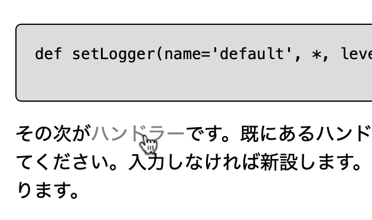
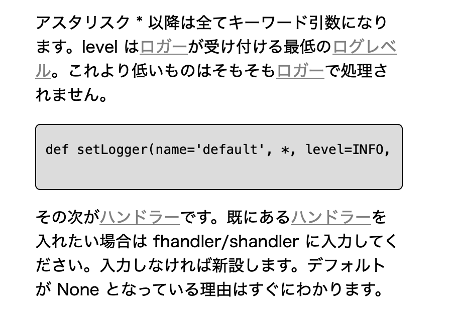

プログラミングの入門まで終わった方々に向けて、ターミナル・コマンドプロンプト上で作動する 2048 のプログラミングを制作・解説します。使用言語は Python で、
- フロー制御
- 関数
- リスト
- クラスとオブジェクト
についての知識が前提となります。
~~~~~~~~~~~~~~~
進んでいく中で

何だこの言葉？訳わかんねぇ
と感じたら、マウスをその言葉の上に当ててみてください。色が薄くなったら解説ページへジャンプできます。
スマホ・タブレットなど、小さい画面でご覧の方は色が薄くなっているリンクからジャンプできます。
